Inhalt Index DeskTop Bronstein

 Numerische Mathematik Nutzung von Computern Anwendung von Computeralgebrasystemen Mathematica
Numerische Mathematik Nutzung von Computern Anwendung von Computeralgebrasystemen Mathematica


Für die numerische Integration stellt Mathematica die Anweisung 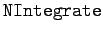 zur Verfügung. Anders als bei der symbolischen Methode wird bei dieser Anweisung mit einer Datenliste der zu integrierenden Funktion gearbeitet. Als Beispiele werden uneigentliche Integrale betrachtet.
| Beispiel A |
|
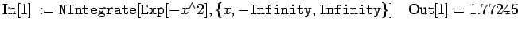. |
| Beispiel B |
|
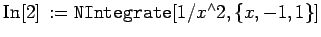 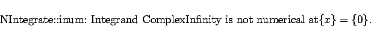
|
Mathematica verwendet bei der numerischen Integration Voreinstellungen gewisser Optionen, die für spezielle Fälle nicht ausreichend sind. So wird mit den Parametern 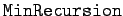 und  die minimale bzw. die maximale Anzahl der Rekursionsschritte, mit denen Mathematica jeweils in problematischen Bereichen arbeitet, bestimmt. Die Voreinstellungen sind jeweils 0 und 6. Erhöht man diese, so wird Mathematica zwar langsamer arbeiten, jedoch auch bessere Resultate liefern.
die minimale bzw. die maximale Anzahl der Rekursionsschritte, mit denen Mathematica jeweils in problematischen Bereichen arbeitet, bestimmt. Die Voreinstellungen sind jeweils 0 und 6. Erhöht man diese, so wird Mathematica zwar langsamer arbeiten, jedoch auch bessere Resultate liefern.
| Beispiel |
|
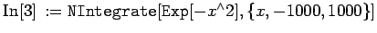 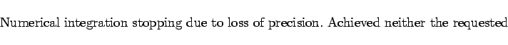
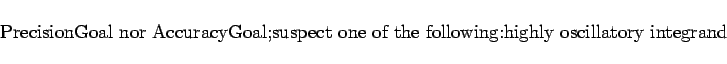
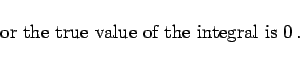
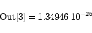
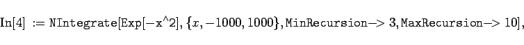
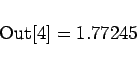
|
Das gleiche Resultat wie im letzten Beispiel erhält man mit der erweiterten Anweisung:
| 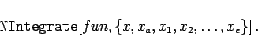 | (19.288) |
Hier können neben unterer und oberer Grenze des Integrals weitere Stellen des Integrationsweges xi angegeben werden, die das problematische Stück einengen und so Mathematica zwingen, hier genauer zu evaluieren.